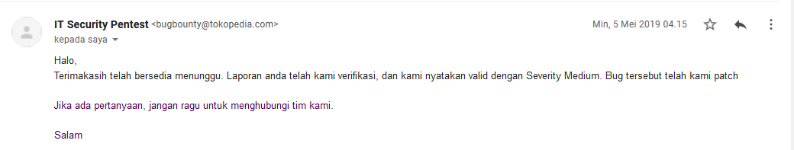
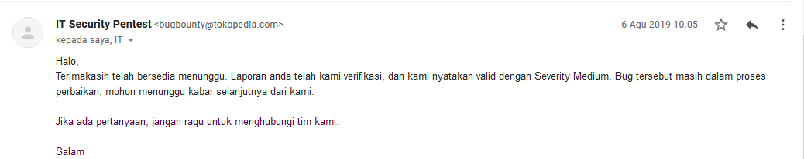
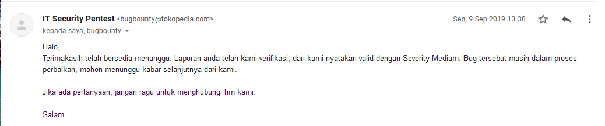
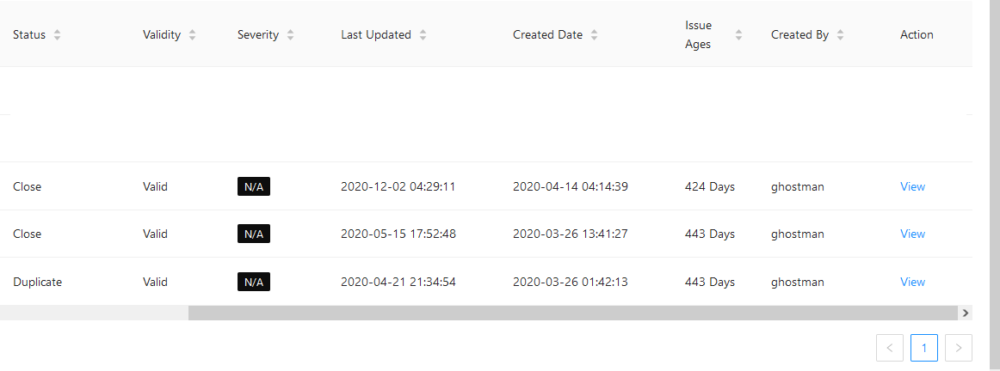
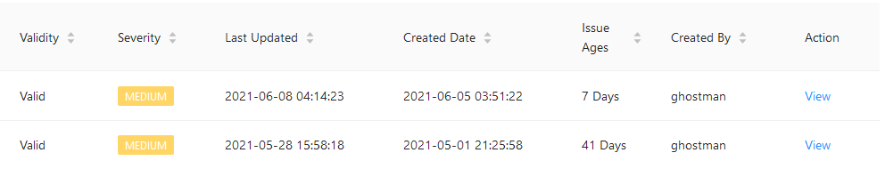

BLOG
My Blog
Perburuan Bug di Platform Tokopedia
Sabtu, 12 Juni 2021
Semua berawal di tahun 2019 ketika saya telah tamat sekolah, dan merasa bosan. Pada saat itu saya bingung harus memilih kuliah atau tidak. Saya langsung membuka burpsuite dan mengunjungi tokopedia.
Setelah berselancar sekian lama saya melihat ketika kita menukar bahasa muncul parameter lang kemudian saya mencoba memasukan payload xss https://www.tokopedia.com/ajax?lang=id"><script>alert(0)</script> dan pop up muncul
Dari sejak itu saya mulai sering melakukan pencarian bug di tokopedia. di 2019 saya hanya menemukan 3 bug saja.


kemudian di tahun 2020 saya juga menemukan 3 bug tetapi tidak menyenangkan karena bug yang ditemukan 2 out of scope dan 1 duplicate. Di tahun 2020 saya jarang mencari bug karena banyak mengikuti beberapa kompetisi CTF.
Di tahun 2021 saya mulai mencari lagi dan saya mendapatkannya. Dari 2 bug ada satu bug yang memiliki impact lumayan besar sehingga rewardnya cukup tinggi. Untuk temuannya belum boleh dipublikasikan.
Mencari bug ini lumayan untuk mengisi waktu luang. Untuk masalah reward di tokopedia tidak sebesar, perusahaan-perusahaan besar di Hackerone dan Bugcrowd.